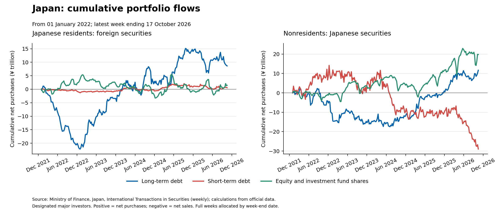
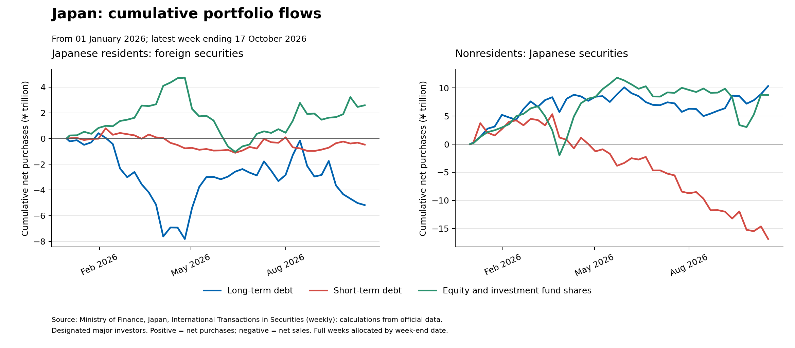
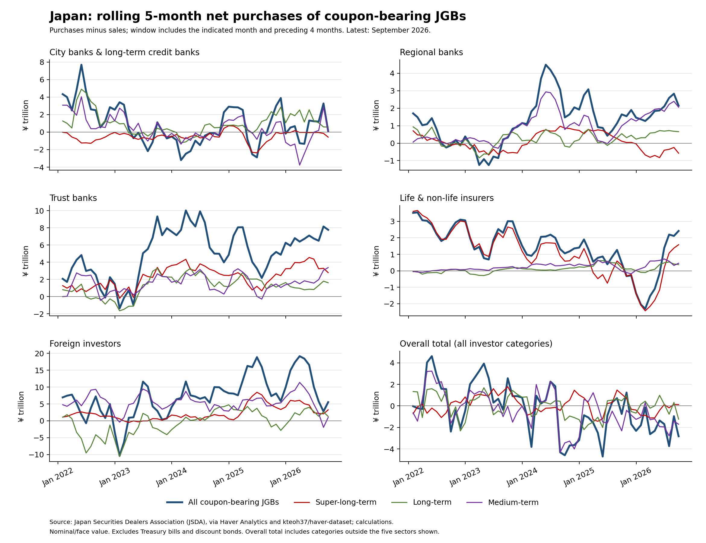

Japan portfolio flows
Cross-border investment and domestic JGB purchases · yen trillion
These are dated tracker results, not a fresh data pull. These charts were last checked on October 27, 2026 around 01:10 UTC. No live cloud refresh has run. “Unchanged” describes the seed’s comparison with its previous input; it does not establish freshness today. MOF coverage ends October 17, 2026; JSDA coverage ends September 2026.
Cross-border portfolio flows since 2022
Cumulative net purchases from January 2022, yen trillion. Residents: foreign equities +1.47, foreign long-term debt +8.66, foreign short-term debt +0.57. Nonresidents: Japanese equities +19.80, Japanese long-term debt +11.66, Japanese short-term debt -28.97. Positive values mean net purchases; negative values mean net sales.
MOF weekly securities transactions · Latest observation: 2026-10-17 · Seed status: unchanged · New: 0 · Revised: 0 · Historical check: 2026-10-27T01:10:28.682283+00:00

Cross-border portfolio flows rebased to 2026
Cumulative net purchases from January 2026, yen trillion. Residents: foreign equities +2.58, foreign long-term debt -5.18, foreign short-term debt -0.48. Nonresidents: Japanese equities +8.72, Japanese long-term debt +10.34, Japanese short-term debt -16.87. Positive values mean net purchases; negative values mean net sales.
MOF weekly securities transactions · Latest observation: 2026-10-17 · Seed status: unchanged · New: 0 · Revised: 0 · Historical check: 2026-10-27T01:10:28.682283+00:00

Who is buying coupon-bearing JGBs?
Rolling five calendar month net purchases, yen trillion; displayed since 2022. Latest all coupon-bearing totals — City banks & long-term credit banks: +0.11; Foreign investors: +5.53; Life & non-life insurers: +2.42; Overall total (all investor categories): -2.83; Regional banks: +2.15; Trust banks: +7.77. Short-, long- and super-long-term maturities are shown separately. Nominal/face value; excludes Treasury bills and discount bonds. The overall total includes categories outside the five displayed sectors and is not their sum.
JSDA via Haver Analytics · Latest observation: 2026-09-30 · Seed status: unchanged · New: 0 · Revised: 0 · Historical check: 2026-10-27T01:10:30.943954+00:00

Interpretation and update status
Domestic JGB buying and foreign-security sales do not identify the same investors and cannot by themselves establish repatriation. MOF long-term debt includes securities beyond JGBs. Cumulative flows measure transactions, not holdings or valuation gains.
This report is a snapshot. The monitor’s twice daily deployment does not refresh the portfolio tracker. Portfolio auto-sync is not configured. These charts will remain at the stated vintage until the report is explicitly updated.